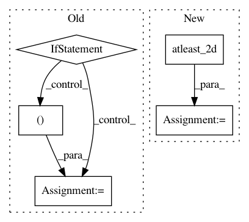

44bdf9be3b913a1a0e90115e45edbee192d01b90,deslib/des/probabilistic.py,Probabilistic,estimate_competence,#Probabilistic#,113
Before Change
for clf_index in range(self.n_classifiers):
// Check if the dynamic frienemy pruning (DFP) should be used used
if self.DFP_mask[clf_index]:
temp_competence = np.multiply(self.C_src[:, clf_index], potential_dists)
competences[clf_index] = np.sum(temp_competence)/sum_potential
return competences
def select(self, competences):
Selects the base classifiers that obtained a competence level higher than the predefined threshold.
After Change
// TODO: Adapt this function to batch processing
dists, idx_neighbors = self._get_region_competence(query)
idx_neighbors = np.atleast_2d(idx_neighbors)
dists = np.atleast_2d(dists)
dists_organized = np.take(dists, idx_neighbors)
//dists_organized = np.array([dists[index] for index in np.argsort(idx_neighbors)])
potential_dists = self.potential_func(dists_organized)
sum_potential = np.sum(potential_dists, axis=1)
In pattern: SUPERPATTERN
Frequency: 3
Non-data size: 5
Instances
Project Name: scikit-learn-contrib/DESlib
Commit Name: 44bdf9be3b913a1a0e90115e45edbee192d01b90
Time: 2018-03-31
Author: rafaelmenelau@gmail.com
File Name: deslib/des/probabilistic.py
Class Name: Probabilistic
Method Name: estimate_competence
Project Name: scikit-learn-contrib/DESlib
Commit Name: 4abda80dd12518e6bfdc44d067566a3e6947e906
Time: 2018-03-28
Author: rafaelmenelau@gmail.com
File Name: deslib/dcs/a_priori.py
Class Name: APriori
Method Name: estimate_competence
Project Name: librosa/librosa
Commit Name: 9dcc84c4e9b1fb55e029435dd5e34c9be4bd21f9
Time: 2015-02-15
Author: brian.mcfee@nyu.edu
File Name: librosa/feature/utils.py
Class Name:
Method Name: stack_memory